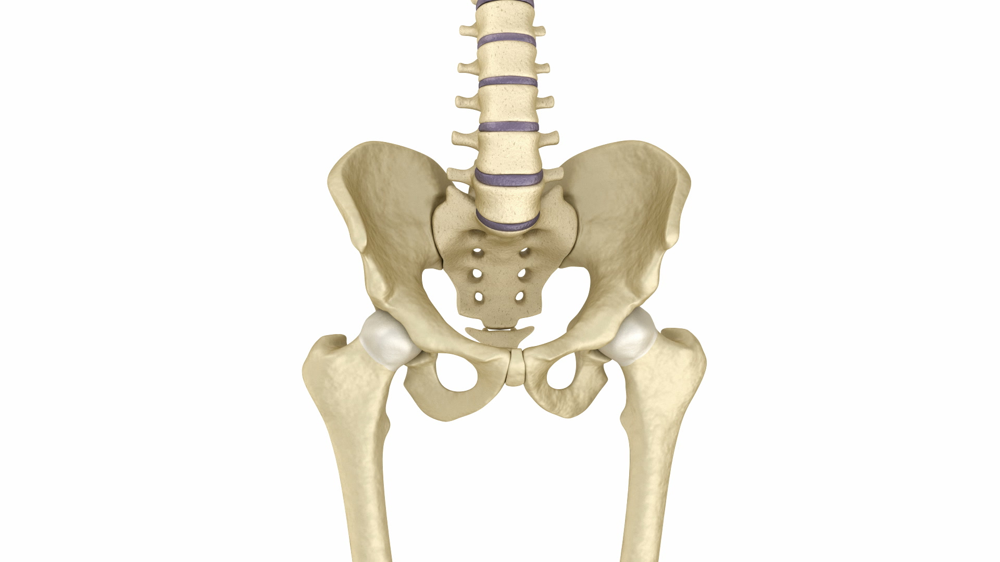

|

|
Karlični pojas predstavlja nepokretni dio donjih udova.
Karlični pojas čine tri parne kosti: bedrenjača, sednjača i preponjača – koje su srasle i grade karlicu. Uloga karlice je da prenosi težinu tijela sa kičmenog stuba na kostur noge i štiti organe koji se nalaze u njenoj duplji. Karlica žena i muškaraca se razlikuje. Kod žena je šira i niža, prilagođena zanošenje ploda i rađanje.
Najjača i najduža kost čovečijeg tijela je butna kost. Gornji kraj butne kosti sa karličnim kostima gradi zglob koji se naziva kuk.
|